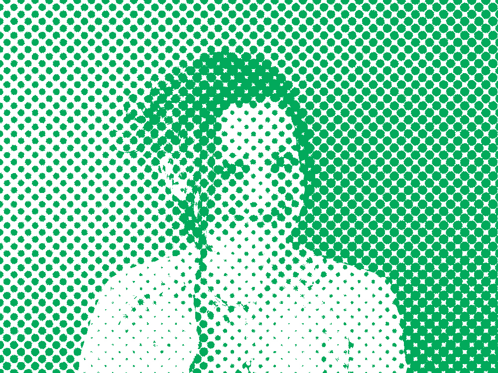
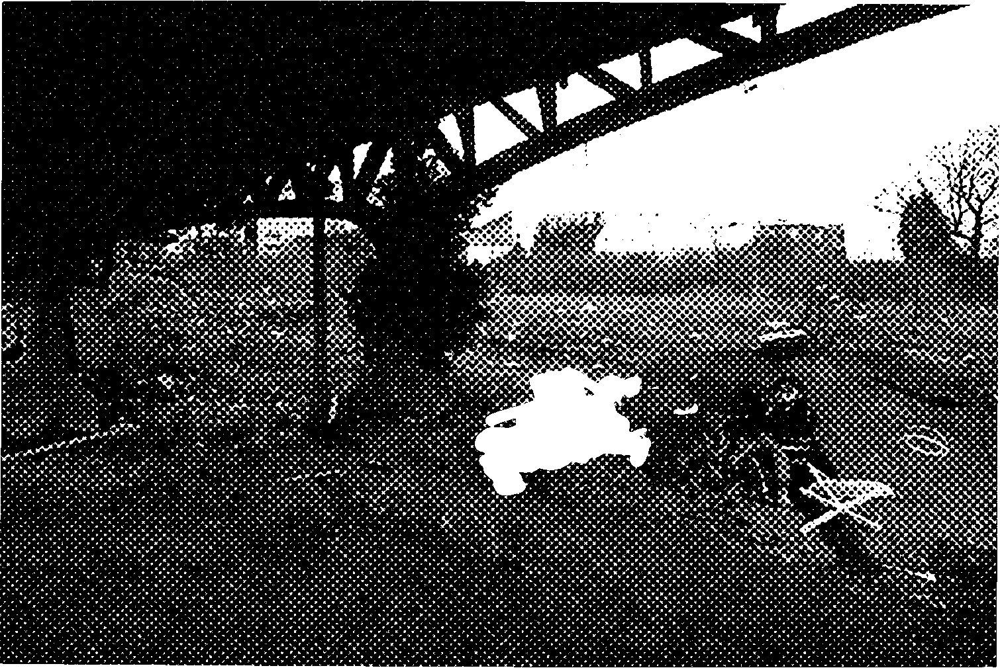
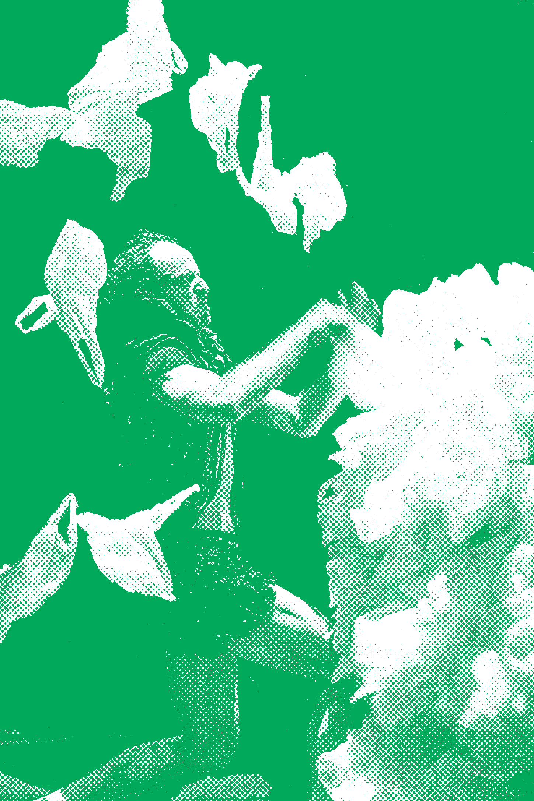
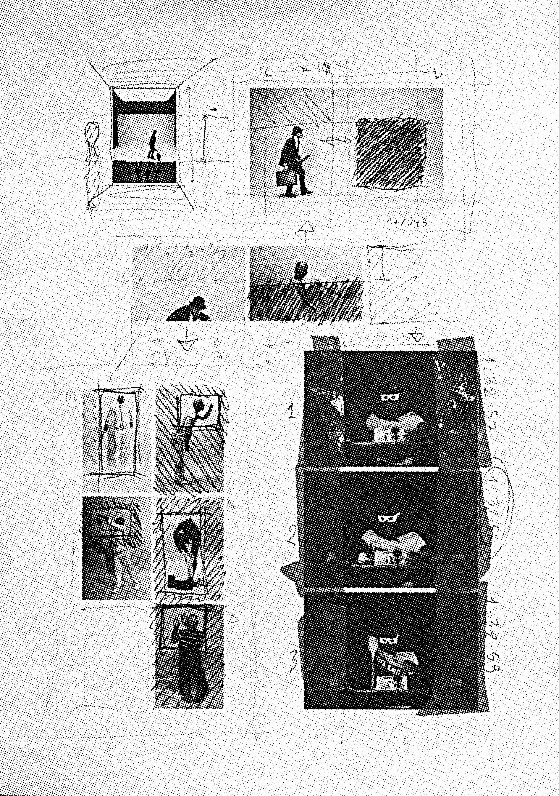
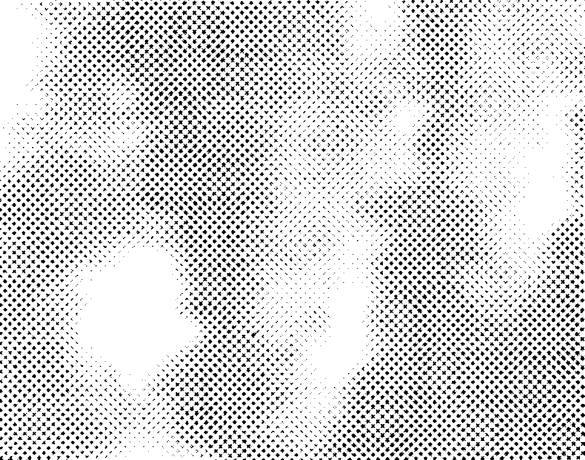
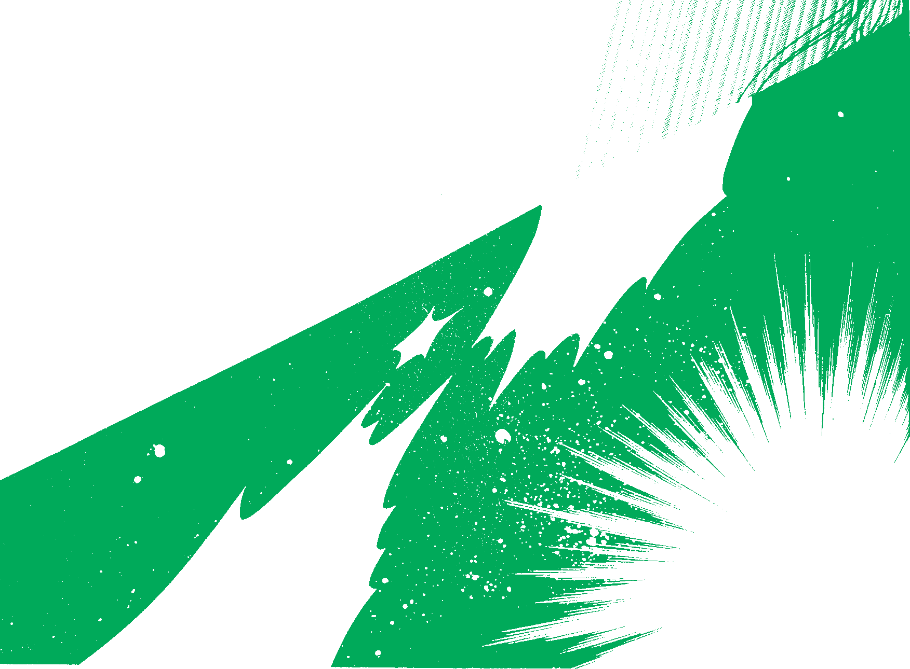
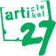
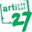

« Balsamiquement vôtre » dans le sens où nous avons la volonté d’agir comme un baume sur certaines difficultés que l’on peut éprouver parfois dans nos vies respectives. Dégageons le sens caché, sortons la tête de l’eau pour voir moins trouble. Peut-on vivre sans ces « je ne sais quoi », sans musique, sans joie et sans amour ? L’art peut être ce magnétisme abstrait qui nous tire vers le haut, qui nous tire de notre lit le matin, qui nous étire, nous rend plus grand, plus ouvert, plus à l’écoute de soi, des autres.
Ce petit guide est concocté à votre intention bienveillante et est censé nous faire passer une année agréable et artistiquement jouissive. Il y a un brin d’Épicure sinon rien, Le plaisir ! Venir au théâtre, découvrir de nouvelles perspectives. Témérité, diront certains, audace inconsciente, objecteront d’autres, ou encore, pur émerveillement. Traiter le contemporain c’est aborder nos vies, notre temps et cela nous est donc naturellement adressé et accessible. Et s’il suffisait de faire confiance à sa sensibilité et à son intuition ?
Il ne reste plus qu’à vous rencontrer, qu’à user ce programme, ce projet qui nous rappelle que les aventures artistiques sont là, à l’image de nos plus belles aventures humaines, pour nous pousser au dépassement plus qu’à la résignation.
Monica Gomes & Fabien Dehasseler
Direction artistique
Comment donner accès au théâtre d’aujourd’hui ? Par quelle porte se faufiler afin de rencontrer au mieux un processus créatif, d’en comprendre les enjeux et d’en ressentir la sensibilité ? Comment aller avec confiance vers l’œuvre théâtrale ? Approcher une création peut être passionnant, à partir du moment où les jalons sont posés… La gageure n’est pas seulement
de savoir qui est Molière ou Shakespeare mais d’appréhender les nouvelles formes scéniques, d’être en contact intime avec l’art d’aujourd’hui, de le ressentir, d’en cerner les contours
et de plonger dans son élaboration.
« Ce que j’aimerais vous proposer ? C’est simplement rencontrer l’œuvre artistique avec vos étudiants, vos proches, vos collègues… Et, pour ce faire, il s’agirait d’imaginer ensemble quelles seraient les activités les plus adéquates à leur proposer. »
Afin de vous faciliter la tâche, j’ai composé ce petit guide qui reprend une sélection des spectacles accessibles à votre public (p. 3–8), et les activités d’accompagnement que nous vous suggérons afin de préparer, d’éveiller votre public de la manière la plus juste (p. 8–9). Nous désirons optimiser la qualité de rencontre entre l’art et le spectateur et privilégier l’échange
à la consommation de masse.
« Qu’est-ce qui me fait sortir la tête de l’eau » est le thème du projet de médiation artistique que nous développerons cette année 2013–2014. N’hésitez pas à nous contacter si vous désirez vous inscrire dans ce beau projet que vous trouverez page 10.
Enfin pour les informations pratiques, jetez-vous sur la page 14 !
Isabelle Colassin,
médiatrice artistique,
02 737 70 18

Sélection de spectacles à destination des écoles et des associations
Fusée
glöörgh opera
Création Théâtre
Clinic Orgasm Society
Du 25 septembre au 5 octobre à 20h30
Amphithéâtre
Torturons en direct un Glöörgh, type d’extra-terrestre assez redoutable,
et questionnons-nous : qu’est-ce qui est humain, qu’est-ce qui ne l’est pas? La pulsion de la destruction est-elle « normale » ? Comment est-elle légitimée dans un cadre sociétal ? Comment est-on prêt à détruire ce qui est étranger à nous ? Comment nous manipule-t-on ?
- Conception
- Ludovic Barth et Claire Deville
- Mise en Scène
- Ludovic Barth
- Collaboration artistique
- Mathylde Demarez
- Musique
- Rodolphe Coster
- Lumière
- Marc Lhomme
- Son
- Benjamin Dandoy
- Interprétation
- Rodolphe Coster, Gregory Duret, Eno Krojanker, Anne-Fleur Inizan
Une production de la Clinic Orgasm
Society en coproduction avec la Balsamine, le Théâtre Varia, le manège.mons / Centres Dramatiques de la Fédération Wallonie-Bruxelles, le PBA + Eden (Charleroi), Le Grand Bleu – ENPDA Lille Nprd/Pas-de-Calais. Avec le soutien du centre des Arts Scéniques (CAS) et de la SACD. Avec l’aide du Conseil de l’aide aux projets théâtraux (CAPT).
Niveau français
Accessible
Thématiques abordées
La normalité et la destruction
Particularités
Utilisation du chant dans le spectacle. Humour décalé. Le spectateur peut être mis à contribution lors de la présentation. Très ludique.
Atelier avec les artistes, ouvert au public, le samedi 28 septembre, de 17h à 19h, à la Balsamine : imagination/construction de machines de torture.
Les Moutons
Reprise Théâtre
Schieve Compagnie
Du 15 au 26 octobre à 20h30
Foyer
Corinne et Corinne, un mouton blanc et un mouton noir, ont soif de liberté
et décident de rallier le camp des Hommes… Elles philosophent quelque peu sur la question, qui n’est certainement pas anodine, et surtout de manière truculente…
- Concept, écriture
- Élena Perez et Lise Wittamer
- Interprétation
- Élena Perez, Renaud Garnier–Fourniguet, Lise Wittamer
- Scénographie
- Mathieu Chevallier
- Conseiller artistique
- Olivier Boudon
- Diffusion
- Coraline Lefèvre, Julien Sigard (Habemus Papam)
Une production de la Schieve Compagnie, en coproduction avec la Balsamine. Avec l’aide de la Fédération Wallonie-Bruxelles Service du Théâtre.
Niveau français
Accessible
Thématique abordée
L’utopie existentialiste: et si nous refaisions le monde ?
Particularités
Spectacle très amusant, beaucoup d’humour, de dérision, reprise de chansons connues, connotations philosophiques
Atelier avec les artistes, ouvert au public, le samedi 19 octobre, de 17h à 19h, à la Balsamine.
«J'ai enduré vos discours et j'ai l'oreille en feu»
Création Théâtre
Anne Thuot
Du 6 au 16 novembre à 20h30
Amphithéâtre
Anne Thuot traverse les grands thèmes élisabethains (mort, inceste, vengeance, amour…) en excellant dans de passionnantes digressions sur différents sujets de notre société. Et si les grandes passions humaines étaient toujours d’actualité ?
- Mise en scène
- Anne Thuot
- Texte
- Caroline Lamarche
- Interprétation
- Marie Bos, Alice Hubball, Francesco Italiano, Natacha Nicora, Hervé Piron
- Création lumière
- Raphaël Noël
Une production du Théâtre de l’Ancre et de la Balsamine. Avec l’aide de la Fédération Wallonie-Bruxelles, service Théâtre et le soutien de WBTD (aide à la diffusion). En partenariat avec le Centre des Arts Scéniques. Anne Thuot est artiste en Compagnie au Théâtre de l’Ancre.
Niveau français
Accessible

Thématiques abordées
La vengeance, les passions humaines, questionnement sur notre société actuelle
Particularités
Spectacle très intéressant pour les écoles car brassant de grands thèmes de la tragédie de manière ludique et en lien avec des sujets sociétaux.
Atelier avec les artistes, ouvert au public, le samedi 9 novembre, de 17h à 19h, à la Balsamine
Carte Blanche Garage 29
Danse/performances
Compagnie Tupperware
Nos déchets, nos sacs poubelles sont, en quelque sorte, des traces de notre vie… Comment transcender ces résidus ?
- Avec
- Laida Arietta Aldaz,Nicanor de Elia, Laida Aldaz Arietta, Jorge Jauregui Allue, Sabina Scarlat, Tiziano Lavoratornovi
- Costumes et régie
- Sari Brunel, Sylvain Formatche
- Coordination
- Nicanor de Elia
- Vidéo
- Guillaume Bautista
- Diffusion-communication
- Flavia Ceglie
Une production de Garage 29 et de la Compagnie Tupperware, en coproduction avec la Balsamine.
Niveau français
Très accessible (pour les primo-arrivants également)
Thématiques abordées
Quelles traces laissons-nous derrière nous? Thème de la monstruosité abordé.

Particularités
Utilisant les matières plastiques de manière ludique et inventive, ces performances danse enchanteront le tout public
Le samedi 30 novembre dès 14h : atelier parents/enfants, spectacle tout public et dîner
14h00
Atelier ludique pour enfants à partir de 6 ans d’une part, et pour leurs parents d’autre part, autour de la matière plastique et des thèmes tels que l’obscurité, la monstruosité…
16h00
«Monsters», spectacle de danse pour jeune public autour des matériaux utilisés dans l’atelier, toujours sur le thème de la monstruosité.
19h00
Dîner-concert avec «invités surprises»
Vision
Reprise Théâtre/Cinéma
Pierre Megos
Du 25 février au 1er mars à 20h30
Amphithéâtre
Vision brasse les mythes futuristes proposés par Hollywood et nous livre en temps réel une confrontation du théâtre et du cinéma, par le biais de la méthode Bluekey.
- Concept, écriture et mise en scène
- Pierre Megos
- Avec
- Pierre Megos, Florence Minder, Kian Cardoen, Lucas Bierlair, Alessandro de Pascale
- Assistant/Doublure
- Alessandro de Pascale
- Création vidéo
- Caroline De Decker
- Assistant vidéo
- Tonin Bruneton
- Création son
- Iannis Heaulme
- Création lumière et direction technique
- Julie Petit-Étienne
- Scénographe «cinéma»
- Thomas Delord
- Scénographie
- Christine Grégoire en collaboration avec Ledicia Garcia
- Construction
- Marc Defrise
- Maquilleuse
- Maud Liégeois
- Administration
- Manon Faure
- Remerciements
- Sémie, Stéphanie Scultore, Herbert Schuller et Dimitri Megos

Une production de Mothership asbl, en coproduction avec la Balsamine avec l'aide du Service général des Arts de la Scène de la Fédération Wallonie-Bruxelles, Service Théâtre et le soutien du WBTD (aide à la diffusion).
Niveau français
En anglais (mais très peu de dialogues, beaucoup de séquences muettes), sur-titré en français et néerlandais.
Très accessible (pour les primo-arrivants également).
Disciplines
Théâtre/cinéma
Thématiques abordées
Les films de science-fiction hollywoodiens, les utopies futuristes
Particularités
Ce spectacle a recueilli un énorme succès l’année passée. Il est très accessible tout en étant novateur. Venez en découvrir les trucages!
Atelier avec les artistes, ouvert au public, le samedi 1er mars, de 17h à 19h, à la Balsamine.
K Barré #1
le K des Femmes
Création Danse/textes + Concert
Barbara Mavro Thalassitis
Du 19 au 22 mars (avec option pour le 18) à 20h30
Amphithéâtre + Foyer
Célébration barrée de la femme par le biais du mouvement… Faisons et défaisons les clichés !
En extra
Simone elle est bonne
concert
« Simone elle est bonne » décline avec humour les stéréotypes de notre société, sur un air d’électro punk.
- Création
- Barbara Mavro Thalassitis, en collaboration avec Lydia Lunch, Maria Clara Villa Lobos…
- Avec
- Lydia Lunch, Maria Clara Villa Lobos… (distribution en cours)
- Chorégraphie, scénographie et costumes
- Barbara Mavro Thalassitis
Une production de Roberta DC, en coproduction avec la Balsamine. Avec le soutien de la Zone Liège.
Niveau français
Très accessible
Disciplines
Danse et concert
Thématique abordée
Place des femmes dans notre société et les clichés qui en sont véhiculés
Particularités
Très punch et déjanté, avec un esprit rock/punk, cet événement enchantera les esprits jeunes et questionnera de manière pertinente
Atelier avec Barbara Mavro Thalassitis, ouvert au public le samedi 22 mars, de 17h à 19h, à la Balsamine
Activités proposées autour des spectacles :
à la carte !

|
Ateliers |
Performances interactives |
Accompagnements thématiques |
Atelier ponctuel avec les artistes |
|
T o u t
s p e c t a c l e
|
Visite du théâtre, assister à une répétition, atelier initiation jeu (50’/70’) |
Toutes les performances peuvent être choisies |
«Clés du théâtre d’aujourd’hui» (50’);
Langages corporels (50’) |
Rencontre avec les artistes |
F u s é e |
Atelier ludique : Qu’est-ce que la «normalité» ?; Et qu’en est-il de nos peurs ? (50’) |

|
|
28 septembre 17→19h :
construction de Machines de torture |
|
L e s
m o u t o n s
|
Atelier d’écriture avec les actrices : Réécrivons le monde… (50’) |
Écritures scéniques (50’) |

|
19 octobre 17→19h :
mettre en jeu le corps sur scène |
J’ a i
e n d u r é
v o s
d i s c o u r s …
|
Jeux dont vous êtes le héros :
Et si tu jouais dans une tragédie, qu’est-ce que tu ferais ? (50’) |
Écritures scéniques (50’) |
Qu’en est-il de nos passions humaines ? (30’) |
9 novembre 17→19h |
|
|

|
Langages corporels (50’) |
|
30 novembre 14h : parents/enfants — monstruosité |
|
T r i l o g i e
d e
l’ E n f e r
|
Spectacle non repris dans le livret, voir le programme de saison |

|

|
1er février 17→19h :
Lecture au lutrin d’extraits du texte |
|
V i s i o n
|
Visite de l’envers du décor (15’) ; atelier Bluekey (30’) |
Hybridité, transdisciplinarité ou Écritures scéniques (50’) |
Une vision de l’utopie au cinéma… (30’) |
1er mars 17→19h |
|
K
B a r r é
|
Atelier danse autour des clichés de la femme (50’/70’) |
Langages corporels (50’) |
Le K des Femmes (30’) |
22 mars 17→19h |
|
L a
F o r ê t
|
Spectacle non repris dans le livret, voir le programme de saison |


|

|
5 avril 17→19h : composition d’opéras |
Libre à vous de composer votre propre parcours d’accompagnement à travers nos spectacles et nos activités (gratuites).
Public de personnes peu initiées au théâtre d’aujourd’hui
Visite du théâtre ou «Clés du théâtre d’aujourd’hui», Les Moutons, suivi d’une rencontre avec les interprètes, l’atelier Bluekey, Vision.
Public de jeunes ados
«Clés du théâtre d’aujourd’hui», Les Moutons, suivi d’un atelier d’écriture avec les interprètes, J’ai enduré vos discours, préparé par la performance « écritures scéniques » et l’atelier thématique « qu’en est-il de nos passions humaines », Vision, préparé par la performance écritures scéniques et l’atelier thématique « Une vision de l’utopie au cinéma », la visite de l’envers du décor le soir même, et Le K des femmes, suivi d’un débat autour de la place des femmes dans notre société.
Public habitué à fréquenter les salles, aimant les ateliers
Fusée préparé par l’atelier ludique autour de la normalité et la performance sur la transdisciplinarité,
J’ai enduré vos discours, préparé par « le jeu dont vous êtes le héros », Les Moutons et la performance « écritures scéniques ».
Les performances interactives
Une équipe de 2 ou 3 personnes
(une attachée pédagogique : Isabelle Colassin, un des deux directeurs artistiques de la Balsamine : Monica Gomes et Fabien Dehasseler, et un éventuel artiste) viendront à vous en tant que pédagogues singuliers de leur pratique et en tant que performeurs. Pendant 50 minutes, nous vous inviterons à pénétrer dans des univers particuliers en partageant et en « actant » un aspect des créations proposées dans notre saison.
Les ateliers Balsa donnés ponctuellement, le samedi, par les artistes de chaque spectacle, ils permettent de rencontrer autrement la démarche artistique des créateurs. Vous formerez un petit groupe de 15 à 20 personnes maximum et pourrez vivre une démarche artistique de l’intérieur. L’atelier est gratuit pour le public mais il est obligatoire de réserver pour y participer.
Projet de médiation artistique
qu’est-ce qui me fait sortir la tête de l’eau ?
Qu’est-ce qui nous fait hurler de plaisir tous les matins ? Qu’est-ce qui nous fait grimper aux murs ? Qu’est-ce qui fait que l’on chante à tue-tête parce que, dans l’air, il y a quelque chose? Où allons-nous en cachette pour recharger nos batteries ? Pourquoi ce truc, on le fait, on l’écoute, on le sent, on le voit, on le touche, encore et encore ? Pourquoi on aime cela par dessus tout ? Quels sont ces petits plus de la vie, ces petits extras qui nous font parfois sourire quand nous avons besoin de pleurer ? Parfois, on oublie de regarder, parfois on vit sur des rails. Mais la vie est là, brute, belle, émouvante. La question de l’art est une question de partage du sensible. Et c’est ce que nous vous proposons. C’est une question de patrimoine commun, l’idée de mettre l’art comme but de lien social et que l’art du dehors rejoigne l’art du dedans.
Cette année, nous creuserons les différentes facettes de ce sujet excitant par le biais de trois disciplines :
la danse
des ateliers réguliers avec des danseurs confirmés seront donnés en préparation d’un événement performatif auxquels les participants seront libres de prendre part ou non.
le théâtre performatif
un groupe d’artistes vous invitera à intégrer un événement théâtral présenté
à la Balsamine.
l’art plastique
une récolte de matériaux (vidéos, peintures, photos, éléments bruts, etc.) sera réalisée autour du sujet et ceux-ci seront mis en forme par un artiste.
Si cela vous intéresse, d’une manière ou d’une autre, n’hésitez pas à me contacter. Les dates d’atelier et le nom des intervenants vous seront communiqués très prochainement.
Informations pratiques
Isabelle Colassin, service médiation artistique : 02 737 70 18
N’hésitez pas à laisser un message en donnant vos disponibilités ou à envoyer un mail à isabelle.colassin@balsamine.be
Tarifs de groupe Le paiement des réservations
de groupe doit s’effectuer 10 jours avant la date de
représentation choisie.
Groupe adulte
(à partir de 10 personnes) : 10€ la place + 1 place offerte à
l’organisateur
Groupe étudiant (à partir de
10 personnes) : 6€ la place + 1 place offerte à l’enseignant
Article 27 et Arsène 50
Tarifs étudiants
en écoles supérieures artistiques
4€
Tarifs réduits
8€ — prévente 6€
(étudiants, + 60 ans, demandeurs d’emploi, schaerbeekois)
CarteProf
et FédéCarte
8€
Théâtre la Balsamine
Avenue Félix Marchal, 1
1030 Bruxelles
Réservation
02 735 64 68
www.balsamine.be
Bus et métro
Bus 29, 64, 28, 61 (Dailly) — Bus 63 (Plasky) — Tram 25 (Meiser) — Bus 410, 358, 351, 318 (Dailly) — Metro Madou — Collecto 051 Dailly — Villo — Bus de nuit N05 (Plasky) et N04 (Meiser)
Éditeur responsable
Fabien Dehasseler, Avenue Félix Marchal, 1 - 1030 Bruxelles
Photographie
Hichem Dahes sauf mentions contraires
Design
Open Source Publishing
Fichiers disponibles
sous licence art libre sur osp.constantvzw.org
Impression
Imprimerie Dereume, Drogenbos


 
